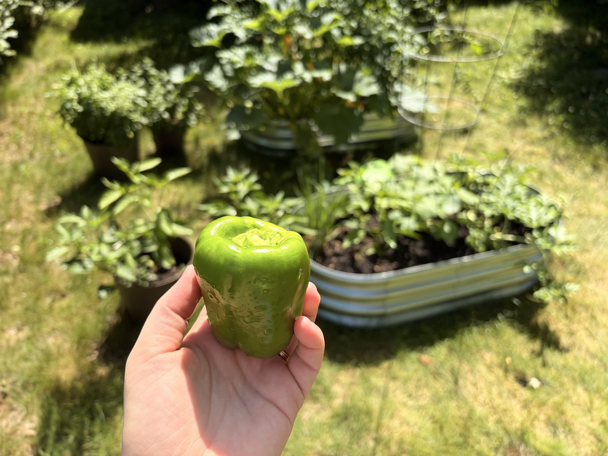
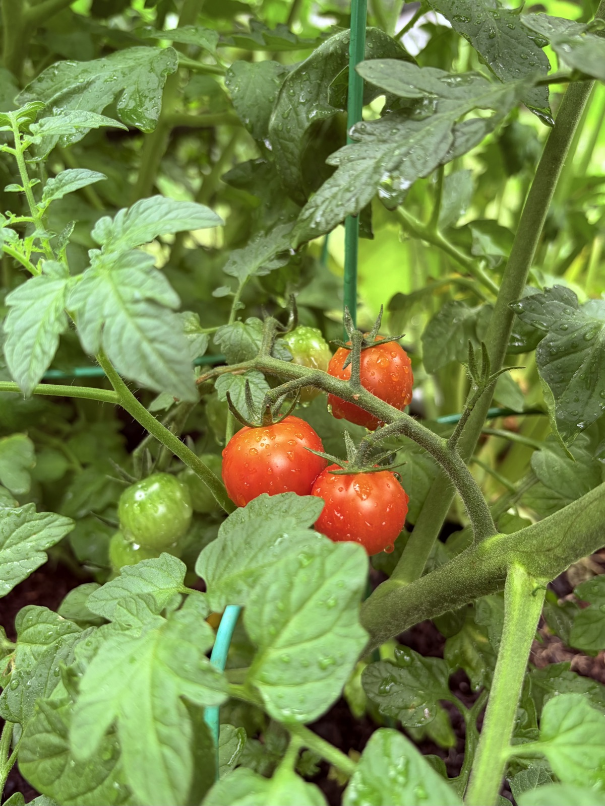
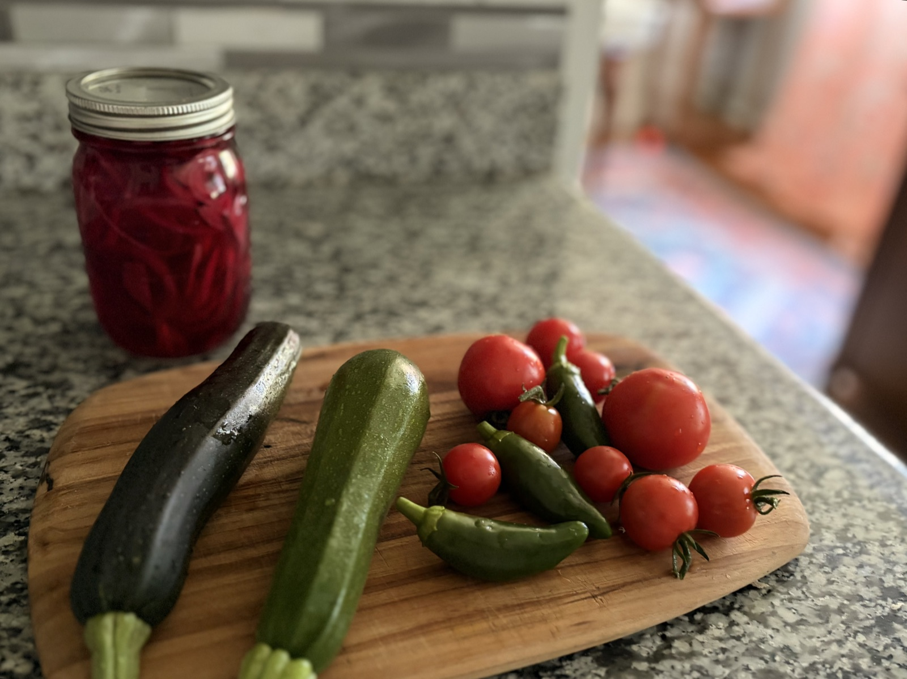

Notes from an unserious gardener
This is my first summer actually trying to grow vegetables, following some impulse plant purchases at a local grocery store.

What's actually growing
More than I expected! I've got heirloom and cherry tomatoes, green bell peppers, jalapeños, and some mystery peppers that I lost the tags for and am waiting to see what color and shape they end up. There's also watermelon, cucumbers, and zucchini. For herbs I have basil, mint, and spring onions.
The cherry tomatoes have been the biggest overachievers. They ask for very little and keep handing me tomatoes anyway, which is exactly the kind of relationship I can maintain.

The trial and error part
My process so far has been almost entirely trial and error. Apparently squash plants get really, really big! And watermelons start as very long, climby vines. Who knew!
Why I'm extra glad I started
With all the contaminated produce in the news lately, it feels really good to walk outside and pick something I grew myself. I'm not out here feeding my whole household from the backyard, I don't want to oversell a few raised beds. But knowing where some of our food came from, and that it came from like thirty feet away, has been a genuinely nice feeling this summer.

The good part
We've already had a bunch of fresh salads and my husband made his first ever loaf of zucchini bread out of one of my zucchinis. I am feeling like I might not be enjoying any homegrown watermelon until like September because apparently you need to plant that early, but now I know for next year!
Tune back in next time for hopefully a big reveal regarding the identity of the pepper plant I bought in June!